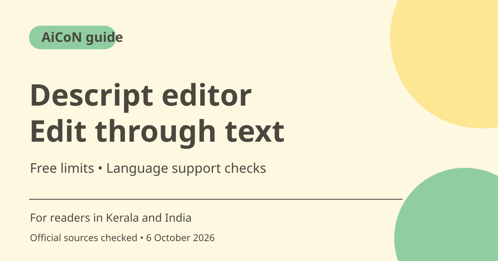

Descript AI editor: free limits and transcript editing
Descript edits audio and video through transcript text, with Underlord as an AI co-editor. Its Free plan offers a limited way to try the workflow without a card. Check media allowances, AI credits and export settings before starting a long project.

What is Descript?
Descript combines recording, transcription, editing and export. Its getting-started guide explains that deleting or rearranging transcript text changes the matching media. Underlord helps with AI editing tasks. This may suit spoken tutorials, interviews and podcasts, but you should still watch or listen to the full finished edit.
Who can use it in India?
A creator, teacher or small team can test a short recording before moving a large production into the tool. For Kerala creators, language support matters. The pricing page lists Hindi among 25 transcription languages but not Malayalam. It lists Malayalam among translated-caption languages, a different feature. Caption translation does not establish native Malayalam transcription support.
Media hours and AI credits are separate
Media hours count imported or recorded media processed in Descript, whether or not you choose transcription. AI credits cover features such as Underlord, Studio Sound and generated media. Using fewer AI tools does not remove the media allowance. Check both meters when estimating whether a project fits a plan.
Free and paid exports
The pricing comparison lists 60 media minutes per month for Free and 720p local video export. Hobbyist lists 10 media hours, 400 AI credits per month and watermark-free 1080p export. Creator and Business advertise higher allowances and 4K export. Do not describe Free as unlimited or as a watermark-free 1080p editor.
Review AI edits before sharing
Filler-word cuts and cleanup can change pacing or remove useful emphasis. Check names, numbers, captions and transitions against the original. Obtain recording and publication permission for interviews or meetings. Clone voices only with the speaker's permission; do not make someone appear to say unapproved words.
Paid prices need billing-period context
The pricing page displays two amounts per paid plan alongside a monthly/annual toggle, but plain text did not reliably connect each amount to a billing mode. Rather than assign the wrong amount, this guide leaves the paid INR price to the live checkout. Check the full annual charge, editor-seat count and renewal, not only a monthly equivalent.
How to use it, step by step
- Open descript.com and choose free access. The pricing FAQ says a card is not needed for the Free plan.
- Create a project and import a short audio or video file, use a built-in recorder or start with a template.
- After transcription, check names and words against the recording. Delete, move or copy transcript sections to edit corresponding media.
- Build scenes and apply layouts. Try a small AI edit with an available tool, then compare it with the original.
- Play the whole composition. Check cut points, captions, voice changes and generated images.
- Choose Export in the top right. Select Local export to save a file and choose format and quality available in your plan.
- Inspect the exported file on the intended screen. Keep the original recording so you can fix unwanted edits or make another export.
Cost, eligibility and limits
| Free | ₹0. No card required. Pricing lists 60 media minutes monthly and 720p local video export. The exact Free AI-credit allowance was not clearly mapped there; check your account. |
|---|---|
| Hobbyist | 10 media hours and 400 AI credits monthly; watermark-free 1080p export. Check the final INR-equivalent price and billing mode before payment. |
| Creator and Business | Higher allowances, 4K export and more tools. Editor seats can be billed separately. Do not assume every translation or dubbing tool is on Free. |
| Language limit | Malayalam is listed for translated captions, not in the checked transcription list. Test a sample and confirm current support. |
Frequently asked questions
Does deleting a sentence remove the video too?
The text-based workflow edits corresponding media when transcript content is deleted. Preview the cut.
Can I start without a payment card?
Yes. The pricing FAQ says a card is not required for Free.
Does Malayalam caption translation mean Malayalam transcription?
No. They are different features with different language lists on the checked page.
Official sources
Checked 6 October 2026. Features and prices can change. This is a guide, not a personal product test.